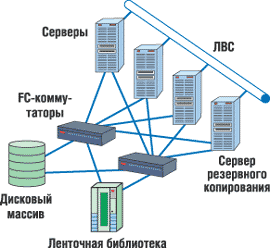
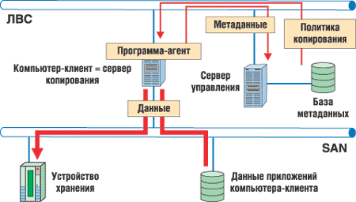
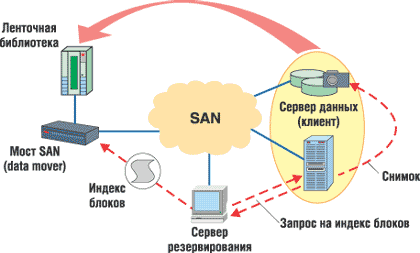

Алексей Борзенко,
к. т. н., доцент РРТА
Эффективность управления современным бизнесом основана на том, что управленческий персонал имеет возможность получать всестороннюю информацию по всем направлениям деятельности предприятия. При этом важно установить контроль над растущими потоками информации, ускорить процесс их обработки, обобщения и анализа. Необходимость постоянно обеспечивать всех участников процесса управления достоверной, целостной, непротиворечивой и актуальной информацией определяет ключевую задачу сегодняшнего дня в области повышения эффективности управления - внедрение современных ИТ в систему управления предприятием.
Разумеется, на каждом предприятии создание информационной системы (ИС) как одного из важнейших инструментальных элементов системы управления имеет свою специфику. Однако есть общие подходы к формированию как ИС в целом, так и ее отдельных элементов. Так, для выполнения стоящих перед ИС задач необходимо обеспечить следующее:
- функциональность сервисов ИС - эта задача решается путем тщательного проектирования;
- заданную производительность сервисов - здесь требуется правильно определить необходимые параметры технических средств, для чего проводятся технический аудит системы, замеры производительности, моделирование нагрузок;
- требуемый уровень доступности сервисов. Надо отметить, что в деле обеспечения непрерывности бизнеса ведущую роль играет не только правильный выбор производителя оборудования и ПО, но в первую очередь грамотная проработка архитектуры системы и разработка комплекса специальных мер по обеспечению высокой доступности.
Помимо требуемой функциональности, производительности и уровня доступности сервисов ИС, предприятие также стремится по возможности сократить совокупную стоимость владения системой (TCO). Грамотная эксплуатация ИС позволяет сократить издержки на администрирование и спланировать расходы на модернизацию. Консолидация технических средств и обслуживающего персонала в Центре обработки данных (ЦОД) также способствует сокращению расходов на эксплуатацию.
При создании ЦОД все данные, сервисы и приложения хранятся и исполняются централизованным образом в специальной структуре. Под ЦОД обычно понимают некую вычислительную инфраструктуру (т. е. набор взаимосвязанных программных и аппаратных компонентов, организационных процедур, мест локации и персонала), предназначенную для безопасной централизованной обработки, хранения и предоставления данных, сервисов, приложений и обладающую высокой степенью виртуализации своих ресурсов. Именно ЦОД создает единый, целостный информационный ресурс предприятия с гарантированными уровнями достоверности, доступности и безопасности данных. ЦОД обеспечивает решение конкретных текущих и перспективных задач, порождаемых изменяющимися и возникающими бизнес-процессами. Кроме того, ЦОД не только позволяет повысить надежность и эффективность принятия управленческих решений; важно отметить, что, имея высоколиквидную рыночную ценность, он повышает стоимость предприятия в целом.
Эффективность ЦОД, обеспечивающего реализацию функций ИС предприятия, зависит от состояния и степени развития всех его элементов и степени их виртуализации. ЦОД как система состоит обычно из серверного комплекса, системы хранения данных, сети передачи данных, инфраструктуры и системы управления. К основным задачам ЦОД обычно относят эффективное консолидированное хранение и обработку данных, предоставление пользователям прикладных сервисов, обеспечение функционирования корпоративных приложений.
Система хранения данных
Система хранения данных ЦОД едина для всех функциональных задач. Как правило, она представляет собой несколько интеллектуальных дисковых массивов (монолитных или модульных), а также одну или несколько систем ленточного хранения информации, подключенных к серверному комплексу ЦОД. Ключевыми особенностями системы хранения считаются:
- использование гетерогенных интеллектуальных хранилищ данных с максимальной автономизацией функций надежности, дублирования и распределения ресурсов хранилищ;
- использование технологий SAN и NAS (в том числе глобальных файловых систем) для реализации прозрачного доступа к ресурсам хранения для всех потребителей с минимальными затратами на сопровождение и администрирование;
- эффективные и высоконадежные схемы онлайнового резервирования данных, включающие отработанные гарантированные схемы и методики восстановления данных.
Обычно для создания системы хранения данных ЦОД рекомендуется SAN-архитектура (рис. 1). Дело в том, что система хранения данных ЦОД, реализованная с использованием сети хранения данных (SAN), имеет следующие преимущества:
- высокую производительность;
- высокую расширяемость с сохранением архитектурной простоты;
- прозрачное управление доступом к данным с нескольких серверов или виртуальных доменов;
- надежность хранения данных и поддержку их интеллектуального резервного копирования;
- обеспечение непротиворечивости данных, в том числе при операциях восстановления с резервных копий.
|  | Рис. 1. Архитектура SAN.
|
Основная задача, решаемая при построении системы такого уровня, заключается в том, чтобы обеспечить высокую степень доступности данных и защищенности их как от локальных катастроф, так и от глобальных (в пределах страны) катаклизмов. Первая часть этой задачи решается за счет технологии Fibre Channel, способной работать на больших расстояниях, что позволяет создать два разнесенных в пространстве вычислительных центра и зеркалировать или синхронно реплицировать наиболее критичные данные между ними (рис. 2). Зеркалирование данных между вычислительными центрами не только обеспечивает надежность хранения данных, но и служит основой для построения высоконадежных кластеров, благодаря которым достигается и высокая степень доступности информации. Для защиты наиболее критичных данных от глобальных катастроф применяется асинхронное удаленное зеркалирование (remote mirroring) данных через Интернет на дисковые массивы с последующей миграцией информации на ленты. Кроме того, корпоративная система хранения данных имеет единые средства мониторинга и управления, которые позволяют отслеживать все происходящие в системе события с рабочего места администратора, что существенно упрощает эксплуатацию вычислительного комплекса.
 |
| Рис. 2. SAN для основного и резервного ЦОД.
|
Возможности SAN
Архитектура SAN привлекательна для ЦОД открывающейся возможностью более гибко решать проблемы масштабирования различных устройств хранения и оптимизации емкости хранения. Как известно, SAN (Storage Area Network) - это выделенная сеть, предназначенная для высокоскоростного соединения серверов с устройствами хранения данных, например, дисковыми массивами, ленточными и оптическими библиотеками. Благодаря своим характеристикам SAN может поддерживать несколько протоколов и операционных систем и управляться подобно разнородным сетям. Она также сравнительно легко масштабируется, что способствует ее применению в крупных проектах. Иными словами, данная технология позволяет серверу получить доступ к любому накопителю, не загружая при этом ни другие серверы, ни локальную вычислительную сеть. Кроме того, возможен обмен данными между накопителями без участия серверов. Благодаря высокой производительности и надежности SAN предлагает новые возможности подключения к кластерам, создания приложений защиты данных, а также централизованного управления системами хранения данных.
SAN не зависит от среды передачи, но на данный момент фактическим стандартом является технология Fibre Channel, обеспечивающая скорость передачи данных 1-2 Гбит/с. В отличие от традиционных сред передачи на базе SCSI, обеспечивающих подключение на расстоянии не более 25 м, Fibre Channel позволяет работать на удалении до 10 км. Средой передачи в сети Fibre Channel могут служить как медный кабель, так и оптоволокно.
При построении сети хранения могут использоваться все допустимые топологии Fibre Channel: "точка-точка" (прямое подключение сервера к дисковому массиву), арбитражная петля (Arbitrated Loop, FC-AL), коммутируемое подключение (switched, FC-SW). Технология Fibre Channel поддерживает блочный ввод-вывод по протоколу SCSI, при котором операции чтения-записи идентифицируют определенное устройство хранения (диск или ленту) и определенный блок на диске. Доступ к данным на уровне блоков, обеспечивающий возможность получать по запросу отдельные записи, а не целые файлы, а также оптимизация технологии Fibre Channel для высокопроизводительной и надежной передачи больших блоков с минимальными затратами делают сети хранения на базе FC эффективной платформой для ответственных транзакционных приложений (серверов баз данных, хранилищ, ERP-систем). Несомненно, выигрывают такие многопользовательские системы и от консолидации всех корпоративных ресурсов памяти в одном месте.
В сеть хранения можно подключать дисковые массивы RAID, простые массивы дисков (так называемые JBOD - Just a Bunch of Disks), ленточные или магнитооптические библиотеки для резервирования и архивирования данных. Применение SAN позволяет рассматривать все дисковые массивы предприятия как единый управляемый ресурс, который легко перераспределить между различными серверами и приложениями. SAN обеспечивает эффективное наращивание и масштабирование дисковой системы предприятия. Следует учесть, что вышесказанное относится не только к дисковым системам, но и ко всем другим накопителям, в частности, ленточным и магнитооптическим библиотекам. Кроме того, SAN позволяет отказаться от применения множества небольших накопителей в пользу нескольких крупных дисковых массивов и ленточных библиотек, что зачастую оказывается дешевле. К тому же небольшое число накопителей проще администрировать.
Основные компоненты для организации сети SAN, помимо самих устройств хранения, - это адаптеры для подключения серверов к сети Fibre Channel (Host Bus Adapter, НВА), cетевые устройства для поддержки той или иной топологии FC-сети и специализированный программный инструментарий для управления сетью хранения. Такие программные системы могут выполняться как на сервере общего назначения, так и на самих устройствах хранения, хотя иногда часть функций выносится на специализированный тонкий сервер для управления сетью хранения (SAN appliance).
Задача ПО для SAN - это прежде всего централизованное управление сетью хранения, включая конфигурирование, мониторинг, контроль и анализ компонентов сети. Одна из наиболее важных - функция управления доступом к дисковым массивам, если в SAN хранятся данные разнородных серверов. Сети хранения обеспечивают одновременный доступ множества серверов к множеству дисковых подсистем, привязывая каждый хост к определенным дискам на определенном дисковом массиве. Для разных ОС необходимо расслоение дискового массива на "логические области" (Logical Unit, LUN), которыми они будут пользоваться без возникновения конфликтов. Выделение логических областей может понадобиться и для организации доступа к одним и тем же данным для некоторого пула серверов, например, серверов одной рабочей группы. За поддержку всех этих операций отвечают специальные программные модули.
ПО для SAN предлагает и такие возможности, как удаленное зеркалирование данных в катастрофоустойчивых решениях, создание копий ("клонов") и мгновенных виртуальных образов логических томов (snapshot). Клонирование позволяет независимо от основных использовать дополнительные копии логических томов, например, для резервного копирования. С этой же целью могут применяться создаваемые практически мгновенно и без физического копирования данных виртуальные образы логических томов, которые также удобны для распараллеливания работы нескольких серверов с одной и той же информацией.
Создание PIT-копийСовременные дисковые массивы обладают средствами создания копий данных внутри самого массива. Данные, созданные этими средствами, носят название копий Point-In-Time (PIT), т. е. созданных (фиксированных) на определенный момент времени. Существует два способа создания PIT-копий: клонирование и "моментальный снимок" (snapshot). Под клонированием обычно понимают полное копирование данных. Для создания такой копии требуется столько же дискового пространства, как и для исходных данных, и некоторое время. При ее использовании не возникает нагрузки на дисковые тома, содержащие исходные данные. Иными словами, нет дополнительной нагрузки на дисковую подсистему продуктивного сервера. Механизм работы "моментальных снимков" иной и может быть реализован как программно на продуктивном сервере, так и аппаратно внутри массива. В момент, когда необходимо начать резервное копирование, программа-агент дает приложению команду завершить все транзакции и сохранить кэш-память на диск. Затем создается виртуальная структура - snapshot, которая выглядит для ОС и другого ПО как логический том и представляет собой карту расположения блоков данных. Приложение прерывает стандартный режим работы на очень короткое время, необходимое для сохранения данных. После этого оно продолжает работать в стандартном режиме и изменять блоки данных, но перед изменением старые данные блока с помощью драйвера snapshot копируются в область кэш-памяти snapshot и в карте расположения блоков данных указывается ссылка на новое местоположение блока. Таким образом, карта snapshot всегда указывает на блоки данных, полученные на момент завершения транзакций приложением. Блоки данных, которые не были изменены, хранятся на прежнем месте, а старые данные измененных блоков - в области кэш-памяти snapshot. Программа-агент копирует непротиворечивые данные, полученные на момент завершения транзакций, имея доступ к ним через драйвер snapshot, т. е. используя карту расположения блоков. Создание копий с помощью "моментальных снимков" экономит дисковое пространство, но создает дополнительную нагрузку на дисковую подсистему продуктивного сервера. Какой из методов создания PIT-копий выбрать, решается на этапе проектирования системы резервного копирования, исходя из бизнес-требований, предъявляемых к системе. |
В SAN резервирование данных с дисковых подсистем на ленты происходит вне локальной сети и потому становится более производительным. Так, одна ленточная библиотека может служить для резервирования данных с нескольких дисковых подсистем. Кроме того, при поддержке соответствующего ПО можно реализовать прямое резервирование в SAN без участия сервера, тем самым разгружая процессор. Возможность разнесения серверов и памяти на большие расстояния отвечает потребностям повышения надежности корпоративных хранилищ данных. К достоинствам применения сетей SAN для решения задач резервного копирования надо отнести и очень высокую скорость резервного копирования - за счет большой пропускной способности интерфейса Fibre Channel. Таким образом, применение SAN позволяет решить ряд проблем, возникающих при построении систем резервного копирования.
Система резервного копирования
Как известно, система резервного копирования - обязательная составляющая решения для обеспечения высокой доступности любых систем и предназначена для создания резервных копий и восстановления данных. Кроме того, система резервного копирования выступает как один из необходимых методов обеспечения непрерывности бизнеса. Чтобы система резервного копирования отвечала своему назначению и работала оптимальным образом, требуется выполнить полный цикл проектных работ (что, впрочем, рекомендуется для любой создаваемой системы). Построение централизованной системы резервного копирования позволяет сократить совокупную стоимость владения ИТ-инфраструктурой за счет оптимального использования устройств резервного копирования и сокращения расходов на администрирование (по сравнению с децентрализованной системой).
Централизованная система резервного копирования имеет многоуровневую архитектуру, в которую входят:
- сервер управления резервным копированием (может также совмещать функции сервера копирования данных);
- один или несколько серверов копирования данных, к которым подключены устройства резервного копирования;
- компьютеры-клиенты с установленными на них программами-агентами резервного копирования;
- консоль администратора системы резервного копирования.
Администратор системы ведет список компьютеров-клиентов резервного копирования, устройств записи и носителей хранения резервных данных, составляет расписание резервного копирования. Вся эта информация содержится в специальной базе, которая хранится на сервере управления резервным копированием.
В соответствии с расписанием или по команде оператора сервер управления дает команду программе-агенту, установленной на компьютере-клиенте, начать резервное копирование данных в соответствии с выбранной политикой. Программа-агент собирает и передает данные, подлежащие резервированию, на сервер копирования, указанный ей сервером управления.
Сервер копирования сохраняет полученные данные на подключенном к нему устройстве хранения данных. Информация о процессе (какие файлы копировались, на какие носители и т. п.) сохраняется в базе сервера управления. Эта информация позволяет определить местоположение сохраненных данных, если потребуется восстановить их на компьютере-клиенте.
Чтобы система резервного копирования сохраняла непротиворечивые данные компьютера-клиента, они не должны подвергаться изменениям в процессе их сбора и копирования программой-агентом. Для этого приложения компьютера-клиента должны завершить все транзакции, сохранить содержимое кэш-памяти на диске и приостановить работу. Этот процесс инициируется по команде программы-агента, которая передается приложениям компьютера-клиента.
В то же время система резервного копирования - это служебная подсистема ЦОД и соответственно имеет некоторые особенности. Так, процесс резервного копирования не критичен для решения задач ИС, т. е. сбой в системе резервного копирования не приводит к снижению доступности критичных информационных сервисов. Нагрузка на вычислительные средства, которую создает процесс резервного копирования, не считается полезной с точки зрения предоставления информационных сервисов ИС. Поэтому систему резервного копирования не нужно резервировать, например, создавая кластер серверов резервного копирования. Однако, поскольку система резервного копирования предназначена для восстановления данных после сбоя или аварии, созданные резервные копии необходимо проверять на предмет целостности и работоспособности. Кроме того, при построении системы резервного копирования необходимо уложиться в сокращенное "окно" резервного копирования. Вообще говоря, требование круглосуточной (24х7) работы информационных сервисов сокращает "окно" резервного копирования (доступный временной интервал остановки приложений, необходимый для операции резервного копирования) практически до нуля.
Необходимо также уменьшить трафик данных резервного копирования в общей корпоративной локальной сети. Структура системы резервного копирования предполагает передачу данных с компьютеров-клиентов на серверы копирования через эту локальную сеть. Очевидно, что при большом объеме данных, подлежащих резервному копированию, использование общей корпоративной локальной сети для их передачи резко повысит трафик в сети, сделав ее недоступной для других приложений.
До появления сетей хранения данных SAN для сокращения трафика резервного копирования в основной сети применялась выделенная сеть резервного копирования, а также многоуровневая структура, включающая несколько серверов копирования. Выделение сервера копирования и локализация трафика резервного копирования между этим сервером и "тяжелыми" серверами, несущими основную информационную нагрузку, позволяют сократить нагрузку на общую локальную сеть.
Резервное копирование с использованием SAN
Как отмечалось выше, в традиционных сетях резервное копирование может приводить к перегрузке локальной сети, файловых серверов и серверов приложений. В результате, если резервное копирование приходится выполнять в рабочее время, продуктивность работы пользователей может существенно снизиться. Кроме того, традиционные системы резервного копирования уже не обеспечивают достаточной производительности для обработки постоянно растущих объемов данных. С другой стороны, SAN позволяет полностью перенести трафик резервного копирования с локальной сети на сеть хранения. Существует два варианта реализации такого копирования - без загрузки локальной сети, или внесетевое копирование (LAN-free backup), и без участия сервера, или внесерверное копирование (Server-free backup).
Внесетевое копирование
При внесетевом копировании (рис. 3) данные c диска на ленту и обратно передаются внутри SAN. Исключение сетевого сегмента из пути резервного копирования данных позволяет избежать излишних задержек на передачу трафика через сеть IP и платы ввода-вывода. Нагрузка на локальную сеть падает, и резервное копирование можно проводить практически в любое время суток. Однако пересылку данных выполняет сервер, подключенный к SAN, что увеличивает нагрузку на него. Благодаря протоколу Fibre Channel можно организовать несколько каналов передачи данных с помощью одного оптического кабеля. Весь объем резервируемых данных с backup-серверов хранения направляется на ленточное устройство, минуя локальную сеть. В этом случае локальная сеть необходима лишь для контроля работы самих backup-серверов со стороны главных серверов. Таким образом, только небольшой объем метаданных, которые содержат информацию о резервируемых данных, передается по локальной сети.
|  |
| Рис. 3. Организация внесетевого копирования.
|
Главные серверы отвечают в целом за политику резервного копирования данных в своем сегменте или зоне ответственности. Все backup-серверы по отношению к главному серверу выступают как клиенты. Считается, что рассматриваемый метод резервного копирования может максимально задействовать пиковую полосу пропускания Fibre Channel.
В качестве протокола для передачи данных между серверами и библиотеками используется как SCSI поверх Fibre Channel, так и IP поверх Fibre Channel, тем более что большинство FC-адаптеров и FC-хабов поддерживают одновременно оба протокола (IP и SCSI) на одном канале Fibre Channel. Считается, что протокол SCSI, изначально разработанный для эффективной передачи больших блоков данных между серверами и накопителями, больше подходит для применения в сетях SAN.
Внесерверное копирование
Вообще говоря, этот тип резервного копирования представляет собой дальнейшее развитие метода внесетевого копирования (LAN-free), поскольку уменьшает число процессоров, памяти, устройств ввода-вывода, задействованных в этом процессе. Этот процесс, иногда называемый "ненавязчивым копированием образа" (non-intrusive image backup), архивирует разделы целиком, в отличие от пофайлового архивирования, но при этом позволяет восстанавливать отдельные файлы. По определению, при внесерверном копировании данные копируются с диска на ленту и обратно без прямого участия сервера. Существует несколько способов так называемого внесерверного резервного копирования, например, с помощью специального ПО или команд расширенного копирования SCSI-3 Extended Copy либо за счет добавления запасного узла или выделенного сервера для архивирования сервера приложений. Для резервного копирования требуется наличие некоторого дополнительного третьего узла, полностью отвечающего за процесс копирования; отсюда происходит и другое название этого подхода - копирование с участием третьей стороны (Third-Party Copy, 3PC). В качестве такого оборудования может выступать, например, маршрутизатор хранилищ данных, который берет на себя функции, ранее выполнявшиеся сервером.
Как известно, одно из преимуществ архитектуры SAN заключается в отсутствии жесткой привязки составляющих ее систем к каким-либо устройствам хранения данных. Это свойство и лежит в основе технологии резервного копирования без участия сервера. В данном случае к дисковому массиву могут иметь прямой доступ как сервер данных, так и устройства, принимающие участие в копировании данных с дисковых массивов. Резервному копированию блоков данных, относящихся к какому-либо файлу, предшествует создание некоего индекса или списка номеров принадлежащих ему блоков. Это и позволяет в дальнейшем привлечь внешние устройства для резервного копирования.
Стоит еще раз подчеркнуть, что физическая пересылка данных выполняется внутри быстрой сети SAN. Диски и стримеры только получают и/или выдают команды SCSI-3 Extended Copy. Таким образом, высвобождается не только сеть, но и серверы приложений. Вообще говоря, внесерверное копирование часто определяется как операция, при которой диск и/или ленточный накопитель самостоятельно координирует и выполняет все необходимые операции ввода-вывода, и в этом процессе не участвуют никакие другие устройства. Таким образом, внесерверное копирование позволяет напрямую перемещать данные между подключенными к сети SAN дисковыми массивами и библиотеками, причем данные перемещаются по сети SAN и не загружают ни локальную сеть, ни серверы.
Внесерверное копирование считается идеальным решением для корпоративных сетей, которые должны функционировать в непрерывном режиме 24 часа в сутки 7 дней в неделю, а особенно для тех, в которых "окно" резервного копирования становится недопустимо малым.
Система внесерверного резервного копирования имеет трехуровневую архитектуру (рис. 4). На верхнем, третьем уровне находится центральный сервер резервного копирования, который управляет всем процессом (отслеживает расписание резервного копирования, формирует индексы скопированных файлов, образов, задействованных носителей и т. д.). На втором уровне находятся программные агенты, установленные на серверах, информация с которых подлежит резервному копированию. Эти агенты отвечают за правильную работу с файловой системой и приложениями (например, СУБД), данные которых подлежат резервному копированию, и за формирование "мгновенных снимков" файловой системы или ее части, подлежащей копированию. Агенты формируют список данных, которые должны быть скопированы, обычно в виде адресов блоков данных жестких дисков, и передают его на нижний, первый уровень. Первый уровень представляет собой некий "переместитель данных" (data mover), встроенный в устройства SAN, и ПО. Они выполняют непосредственное перемещение данных между дисковыми массивами и библиотеками на основе списка блоков данных, переданных со второго уровня.
|  |
| Рис. 4. Организация внесерверного копирования.
|
Для взаимодействия между тремя уровнями используются коммуникационные протоколы. Взаимодействие между третьим и вторым уровнями организовано посредством протокола Network Data Management Protocol (NDMP). Вместо NDMP можно использовать и частные протоколы, разработанные производителями ПО резервного копирования. Между первым и вторым уровнями взаимодействие идет по протоколу SCSI-3 Extended Copy (XCOPY), который представляет собой расширение команд протокола SCSI. Ведущие производители SCSI-накопителей давно включают в свои изделия расширенный набор SCSI-3 команд, который обеспечивает непосредственное перемещение данных между SCSI-устройствами. Команда XCOPY входит в семейство стандартов SCSI и позволяет передавать блоки данных с дисковых массивов на ленточные устройства записи, минуя серверы.
Резервное копирование типа Server-free Backup происходит следующим образом. Сервер резервного копирования (третий уровень) в соответствии с заданным расписанием инициирует программные агенты второго уровня. На избранный для резервного копирования том сбрасываются все дисковые буферы. Затем изготавливается snapshot - так называемый моментальный снимок (виртуальная копия) данных. Запись в блоки, вошедшие в snapshot, на время копирования временно перехватывается для сохранения целостности копируемых данных. Агент внесерверного копирования составляет список блоков, на которых физически расположен моментальный снимок, и пока идет копирование, автоматически обновляет его в случае реорганизации файловой системы, переконфигурирования RAID и т. п. Заметим, что создание мгновенной копии занимает намного меньше времени, чем резервное копирование, таким образом, время простоя будет меньше, чем при создании фактического архива. На основе созданного списка программные агенты дают указания устройствам SAN выполнить непосредственное перемещение данных между дисковыми массивами и библиотекой, при этом перемещение данных не затрагивает ни локальной сети, ни серверов. Программа резервного копирования последовательно выдает команды SCSI-3 Extended Copy (XCOPY), передавая поддерживающему их маршрутизатору Fibre Channel или другому устройству адреса физических блоков диска, нуждающихся в копировании.
Внесерверное копирование, помимо преимуществ высокой скорости и снятия с локальной сети и серверов нагрузки, связанной с обработкой трафика резервного копирования, имеет еще следующее важное достоинство. Данный механизм позволяет проводить резервное копирование в обычное рабочее время, не останавливая работу приложений и пользователей и не требуя закрывать открытые файлы.
Несомненно, что наряду с сильными сторонами у рассматриваемой технологии имеются и недостатки, к которым можно отнести, например, значительные затраты средств как на этапе проектирования, так и в ходе последующей эксплуатации всего комплекса, отвечающего за политику резервного копирования. Несмотря на то что концепция Server-free Backup имеет свои ограничения, при правильном управлении, синхронизирующем выполнение резервных копий с работой приложений, эта концепция очень хорошо подходит для поддержки центров резервирования данных, выполнения массовых операций, миграции и т. п., а также для построения архивных и иерархических систем хранения.
В заключение стоит отметить, что высокая пропускная способность SAN обеспечивает скоростную репликацию данных с помощью как программных, так и аппаратных средств. Низкие по сравнению с IP-сетью накладные расходы Fibre Channel и высокое быстродействие позволяют выполнять синхронную репликацию данных с минимальной латентностью, влияющей на доступ серверов к исходным томам данных. Дисковые массивы высшего класса могут выполнять по SAN репликацию дисковых томов друг с другом с помощью встроенных программных средств, прозрачно для серверов. Кроме того, SAN позволяет применять приобретенные ранее устройства совместно с новыми устройствами хранения данных. Дисковые массивы и ленточные библиотеки, не оборудованные интерфейсами Fibre Channel, можно подключить к SAN, используя маршрутизаторы Fibre Channel - SCSI.